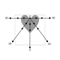
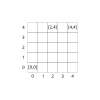
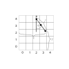
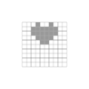
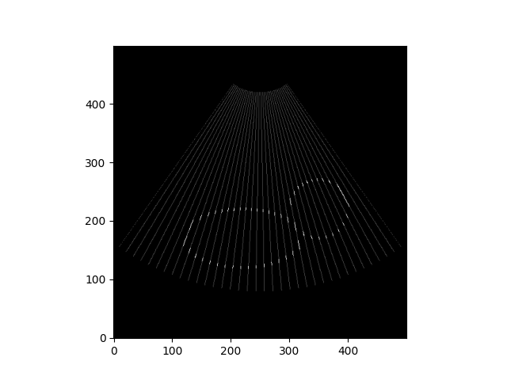

Echografie¶
Met echografie kunnen we in het lichaam kijken zonder het open te maken. We kunnen bijvoorbeeld een ongeboren kind in beeld brengen of onderzoeken hoe het hart eruitziet en functioneert. Daarvoor gebruiken we geluidsgolven: een echoapparaat zendt geluid uit en vangt de terugkerende echo's op. Deze echo's leveren nog geen kant-en-klaar beeld op. Software verwerkt de ontvangen geluidssignalen tot een beeld van de weefsels. In dit hoofdstuk onderzoeken we dit proces. We zoeken eerst uit hoe we geluidssignalen kunnen omzetten in een beeld. Daarna vertalen we die stappen naar code en programmeren we het proces zelf.
Aansluiting MNW-programma
In deze sessie onderzoeken we hoe bij echografie meetgegevens worden omgezet in een beeld en programmeren we zelf een beeldreconstructie. Daarmee sluit de sessie aan bij de minor Biomedische beeldvorming (jaar 3, semester 1). In deze minor leer je de fysische en chemische principes achter verschillende beeldvormende technieken kennen, waaronder echografie. Ook ga je aan de slag met beeldanalyse en beeldbewerking.
Hoe ontstaat een echobeeld?¶
Om te begrijpen hoe we van geluidssignalen een beeld kunnen maken, bekijken we eerst hoe die signalen ontstaan. Bij echografie gebruiken we geluidsgolven met een hoge frequentie. Dit noemen we ultrageluid (Engels: ultrasound). Een probe zendt deze golven het lichaam in. Op de grens tussen twee weefsels wordt een deel van het geluid gereflecteerd. Daardoor ontstaat een echo. De rest wordt doorgelaten en kan dieper in het lichaam opnieuw worden gereflecteerd.
De probe wisselt tussen het uitzenden van geluid en het ontvangen van echo's. Uit de tijd tussen het uitzenden en het ontvangen kunnen we, met behulp van de geluidssnelheid, de afstand berekenen tot de plek waar de echo ontstond. De sterkte van de echo bepaalt hoe helder die plek in het beeld wordt weergegeven. Een probe zendt geluidsgolven in verschillende richtingen binnen een vlak uit en ontvangt de bijbehorende echo's. De software combineert deze informatie tot een tweedimensionaal beeld van de weefsels.
Van meetpunt naar gegevensbestand¶
Om straks de bestanden met gegevens goed te kunnen interpreteren, verzamelen we eerst zelf data op papier. Zo ontdekken we hoe zo'n bestand is opgebouwd en wat de waarden erin betekenen. We gebruiken hiervoor een sterk vereenvoudigd model van echografie.
In onderstaand figuur zie je een grijs gebied in de vorm van een hart:
In het volgende figuur zijn de probe $P$ en de vijf richtingen waarin deze meet toegevoegd. De probe staat bovenaan in het midden en zendt geluidsgolven uit in het $x$,$y$-vlak. De vijf meetrichtingen komen overeen met hoeken van -90$\degree$, -30$\degree$, 0$\degree$, 30$\degree$ en 90$\degree$, waarbij 0$\degree$ recht naar beneden wijst. In elke richting meten we op drie afstanden vanaf de probe. Elk meetpunt is aangegeven met een zwarte stip. De eerste meting doen we bij de probe zelf, op afstand 0.

In ons vereenvoudigde model geeft een meetpunt in het witte gebied een laag signaal, dat we noteren als 0. Een meetpunt in het grijze gebied geeft een hoog signaal, dat we noteren als 1. Het signaal hangt dus alleen af van de kleur op het meetpunt. We kijken in dit model niet naar reflecties op weefselgrenzen, zoals bij echografie wel gebeurt.
Handmatige scan
We gaan nu de meetgegevens op papier noteren zoals ze straks in een bestand staan. Voor elke meetrichting schrijven we de hoek en de signalen op de drie meetpunten op, van dichtbij naar ver weg. We zetten deze waarden op één regel, gescheiden door komma's. Voor de richting -90$\degree$ zijn de signalen achtereenvolgens laag, hoog en laag. Dat geeft: -90,0,1,0.
- Neem de voorbeeldregel voor -90$\degree$ over op papier en vul de gegevens voor de overige vier richtingen aan. Gebruik voor elke richting een nieuwe regel en dezelfde opbouw als in het voorbeeld. Aan het einde heb je vijf regels: één voor elke richting.
Van meetgegevens naar beeld¶
Bij echografie wordt een beeld opgebouwd op basis van meetgegevens. We doen dit eerst op papier, zodat we begrijpen hoe die gegevens worden omgezet in een beeld. Hiervoor gebruiken we de uitkomst van de opdracht Handmatige scan.
We bouwen het beeld pixel voor pixel op. Hiervoor gebruiken we een raster van 5 bij 5 pixels, zoals in onderstaand figuur. We zetten de oorsprong linksonder en geven de positie van elke pixel aan met twee coördinaten: eerst de $x$-coördinaat en daarna de $y$-coördinaat. Beide lopen van 0 tot en met 4. Pixel [0,0] ligt dus linksonder en pixel [4,4] rechtsboven. De probe $P$ staat bovenaan in het midden, op pixel [2,4].

.Om de meetgegevens om te zetten in een beeld, moeten we bepalen waar elk meetpunt ligt. Waar ligt bijvoorbeeld het derde meetpunt in de richting 30$\degree$? Als we de $x$- en $y$-coördinaten kennen, kunnen we de signaalwaarde aan een pixel toekennen.
Van meetpunt naar pixel
Elk meetpunt ligt op een bepaalde afstand van de probe $P$. Het eerste meetpunt ligt bij de probe zelf, op afstand $r=0$. Het tweede meetpunt ligt op afstand $r=1$ en het derde meetpunt op $r=2$. We gebruiken hier de pixels van het raster als maat: een afstand van 1 is gelijk aan de breedte van één pixel. De hoek ten opzichte van de richting naar beneden, 0$\degree$, noemen we $\phi$.

- In bovenstaand figuur zijn drie meetpunten aangegeven voor de richting van 30$\degree$. In welke pixels liggen deze meetpunten? Noteer voor elk meetpunt de coördinaten van de bijbehorende pixel en de afstand $r$ tot de probe.
- Gebruik het figuur en je kennis van goniometrie om vergelijkingen voor $x$ en $y$ op te stellen in termen van $r$ en $\phi$. Houd rekening met de positie van de probe in pixel [2,4].
- Bereken met je vergelijkingen de coördinaten van de drie meetpunten voor de richting 30$\degree$. Rond de coördinaten af op gehele getallen en vergelijk ze met de pixelcoördinaten die je eerder hebt afgelezen. Komen ze overeen?
Met de gevonden vergelijkingen kunnen we bepalen waar een meetpunt ligt. Om een beeld te reconstrueren, geven we de bijbehorende pixel de signaalwaarde van dat meetpunt. In dit eenvoudige geval is dat een 0 of een 1. Zo bouwen we het beeld stap voor stap op.
Reconstructie van het beeld
- Teken een raster van 5 bij 5 pixels. Geef de pixel linksonder de coördinaten [0,0]. Nummer de pixels op beide assen van 0 tot en met 4. Laat alle pixels wit, ze hebben dan allemaal de waarde 0.
- Gebruik de uitkomst van de opdracht Handmatige scan. Bereken voor elk meetpunt de $x$- en $y$-coördinaten met de gevonden vergelijkingen. Rond de coördinaten af op gehele getallen en geef de bijbehorende pixel de signaalwaarde van het meetpunt. Laat pixels met de waarde 0 wit en kleur pixels met de waarde 1 grijs.
- Vergelijk het gereconstrueerde beeld met het oorspronkelijke beeld. Komen ze overeen?
Het gereconstrueerde beeld komt niet precies overeen met het oorspronkelijke beeld. Sommige meetpunten liggen precies op de grens tussen twee pixels. Door hun coördinaten af te ronden, kiezen we aan welke pixel we de signaalwaarde toekennen. Die keuze kan ervoor zorgen dat het gereconstrueerde beeld iets afwijkt van het origineel.
Beeldreconstructie¶
Het reconstrueren van het plaatje vanuit de echografiedata heb je zojuist met de hand gedaan. In de volgende opdrachten ga je de stappen omzetten naar Python code. We starten met het hartje zodat je kunt controleren of je met de computer hetzelfde resultaat krijgt als met de hand.
Data-invoer
Maak een nieuw bestand ultrasound_heart.csv en vul daar de gegevens in die je met de hand hebt 'gemeten'. De eerste regel wordt dan -90,0,1,0. Vul het bestand aan met alle metingen.
Voordat we de data gaan verwerken is het handig om vast uit te zoeken hoe we het resultaat kunnen visualiseren. Dat gaat heel goed met matplotlib.imshow() (afgekort van show image). Je kunt met die functie een image, een plaatje, laten zien. Je moet dan een soort tweedimensionale tabel van waardes aanleveren, die overeen komen met $x$- en $y$-coördinaten. Als je kiest voor een grijze color map, dan wordt de waarde 0 zwart, de waarde 1 wit, en alles er tussenin wordt een grijstint. Het is voor ons rekenwerk handig als de oorsprong linksonder begint, zoals we tot nu toe steeds gedaan hebben. Computerschermen rekenen normaal gesproken vanaf boven, dus dit moeten we excpliciet aangeven.
Tweedimensionale gegevens visualiseren
Het maken van de tweedimensionale tabel en het laten zien van het plaatje ziet er als volgt uit:
We maken een lijst voor iedere regel, met een 0.0 (zwart) voor iedere kolom die we hebben. Het plaatje zelf bestaat vervolgens uit een lijst van al die regels. Als we nu een element willen veranderen dan kan dat op twee manieren. Stel we willen het eerste element op de derde regel veranderen: Een openstaande vraag is nog wat de $(x, y)$-coördinaten zijn van dit element.Werken met plaatjes
Maak een bestand ultrasound_reconstruction.py en plak bovenstaande code daarin. Als je het runt krijg je een zwart plaatje, want alle staat op nul.
- Maak de $(x, y)$-coördinaten (1, 1) en (2, 1) wit. Doe dit met een
image[...][...] = ...-regel. Controleer of het plaatje klopt met je verwachting. - Als ik dat met variabelen doe, dus bijvoorbeeld: Hoe moet de laatste regel er dan uitzien?
- De reconstructie die we met de hand gedaan hebben was een 5x5-plaatje, en niet 3x3. Pas je code aan zodat je volledig zwart 5x5 plaatje krijgt; dat plaatje gaan we later vullen met de resultaten van onze metingen.
Splitsen, splitsen, splitsen!
Je hebt inmiddels al vaker de tekst van een bestand ingelezen. Vervolgens heb je de tekst gesplitst in regels met .splitlines(). Je kunt op méér splitsen dan alleen regeleindes met de aanroep #!.split(). Je geeft dan een stukje tekst mee waarop hij moet splitsen. Bijvoorbeeld:
Inlezen van de data
Het databestand dat we gemaakt hebben bestaat uit regels waarin de verschillende waardes gescheiden worden door komma's, een zogeheten comma-separated values-bestand (CSV-bestand). Kijk zonodig nog even terug naar eerdere opdrachten waar je bestanden in moest lezen.
- Werk verder in het bestand
ultrasound_reconstruction.py. De code die we nu gaan schrijven komt ná het maken van de variabeleimage, maar de twee regels die beginnen metplt.blijven altijd aan het eind van het script staan. - Schrijf code om de tekst uit het bestand
ultrasound_heart.csvin te lezen, en splits op in regels. - Loop over iedere regel en voor iedere regel:
- Splits de regel op in de verschillende waardes.
- Denk na over wat elke waarde ook alweer betekent en bewaar de hoek in de variabele
angle. - Print de hoek.
Je bent nu in staat om alle data voor een bepaalde hoek uit te lezen en de data te gaan reconstrueren.
Graden, radialen, en handig omrekenen
In de oefenopdracht ben je waarschijlijk tot de conclusie gekomen dat je sinus en cosinus nodig hebt om de locaties te bepalen en dat je moet afronden om pixel waardes te krijgen. Let op: de meeste wiskunde en dus ook computers rekenen in radialen. Dat zijn we al eerder tegengekomen in een "verborgen-fout". In de code hieronder staat uitgelegd hoe je het omrekenen makkelijk doet in Python:
Reconstructie van het beeld
Voordat je de code verder gaat uitwerken wil je eerst het plan helder hebben. Kijk terug naar de voorbeeldopdrachten, o.a. van meetpunt naar pixel. Welke rekenstappen heb je daar gemaakt? Maak de stappen zo klein mogelijk en verwerk ze in je code.
- Werk verder in het bestand
ultrasound_reconstruction.py. - Nadat je de hoek print: schrijf een loop over de meetwaardes, waarbij je bijhoudt welke waarde het is (eerste, tweede, derde) want dat is nodig voor de berekeningen.
- Voor iedere meetwaarde, bereken de $x$- en $y$-coördinaten.
- Geef de betreffende pixel in
imagede bijbehorende meetwaarde.
Als deze stappen gelukt zijn dan heb je een plaatje! Als je dat nog niet gedaan hebt, dan is dit een heel goed moment om te committen!
Meer data is beter¶
Je hebt bij de vorige opdracht misschien gezien dat het plaatje afwijkt van wat je met de hand hebt gevonden. Zoals eerder is genoemd kan dat te maken hebben met afronden1. Als je onder meer hoeken en met meer datapunten werkt zul je zien dat de resolutie van het plaatje steeds beter wordt. Dat levert wel een praktisch probleem op: we moeten een image maken met heel veel elementen (pixels).

Fantoombaby op hoge resolutie
Download het csv-bestand ultrasound_phantom.csv. De data bestaat uit 3 niveaus, $0.0$ (geen signaal), $0.3$ (een zwak signaal) en $1.0$ (sterk signaal). Net als bij de vorige opdracht bestaat de eerste kolom uit hoeken en de andere kolommen uit metingen. Maar dit databestand bevat zóveel metingen dat we het moeten reconstrueren in een 501x501 plaatje, in plaats van een 5x5 plaatje. Aan het eind van deze opdracht verwacht je een ovaal met een cirkel, een fantoombaby:

We moeten de code aanpassen om een image-variabele te krijgen met 501 rijen en 501 kolommen. Het is nu niet haalbaar om de code aan te passen zoals we dat eerder gedaan hebben... Verwijder de code die je hebt staan om rijen te maken en toe te voegen aan image. Vervang die door het volgende:
- Maak een lege lijst en stop die in de variable
image. - Schrijf nu een loop die 501 keer herhaalt.
- Binnen de loop: maak een lijst met 501 nullen en stop die in de variabele
row. - Binnen de loop: voeg
rowtoe aanimage.
Als het goed is is je image nu 501 bij 501 pixels. Controleer of je nog andere dingen moet veranderen in je code om de reconstructie goed te laten gaan en reconstrueer dan de data in ultrasound_phantom.csv. Controleer of de afbeelding overeenkomt met het bovenstaande plaatje.
Mystery scan
Download het mystery-bestand. Deze data bestaat uit meer hoeken en meer data-niveaus, en bevat een realistisch beeld in plaats van een bedacht plaatje. Reconstrueer de data in dit bestand.
Oh ja, functies
Idealiter schrijf je vanaf het begin de code op zo'n manier dat je alleen het pad naar het bestand hoeft aan te passen en waar je makkelijk het aantal rijen en kolommen kunt wijzigen. Misschien wil je wel met één script alle voorgaande datasets tegelijk reconstrueren en naast elkaar openen. Dat kan door de reconstructiecode in een functie te stoppen. Schrijf een functie zodat je het volgende kunt doen in je code:
Deze paar regels kun je dan kopiëren om de andere datasets te analyseren,-
Mocht je het rekenwerk hebben uitbesteed aan Python dan kan het zijn dat jij een symmetrisch plaatje hebt gekregen terwijl andere mensen die het met de hand uitrekenen een asymmetrisch plaatje kregen (de 'kip'). De reden dat de uitkomsten verschillen heeft te maken met afronden. Als je met de hand hebt uitgerekend rond je waarschijnlijk $2.5$ af naar boven, zoals je ook op school hebt geleerd. Maar Python doet dat anders, die rondt het af naar het dichtsbijzijnde even getal. Dus $1.5$ wordt $2$ en $2.5$ wordt ook $2$. Dit voorkomt een bias naar hogere getallen wat je krijgt als je altijd naar boven afrondt. Dit algoritme wordt ook door bijvoorbeeld banken gebruikt die niet graag geld verliezen als ze altijd naar boven afronden. Daarom heet het algoritme ook wel Banker's rounding. ↩